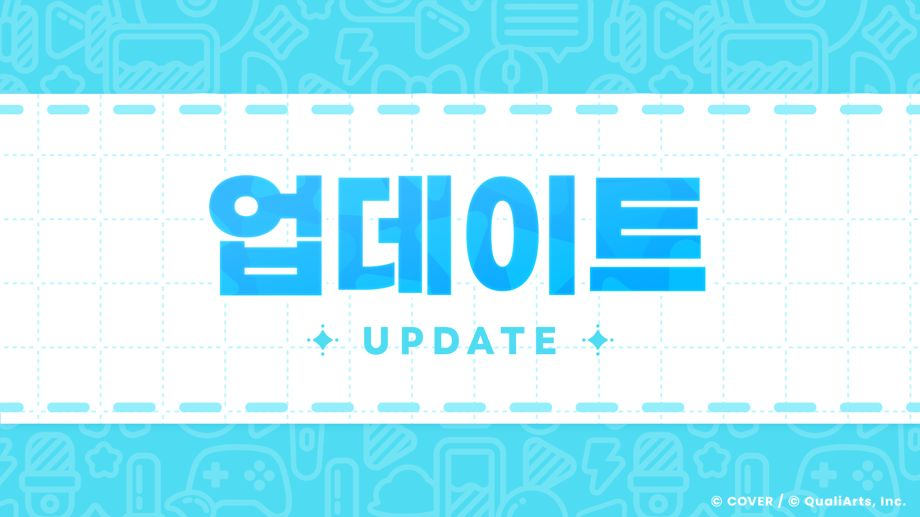
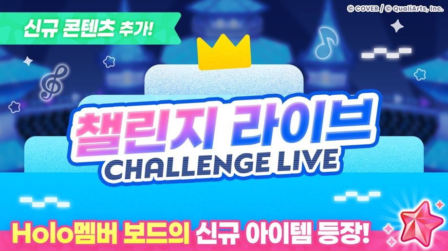
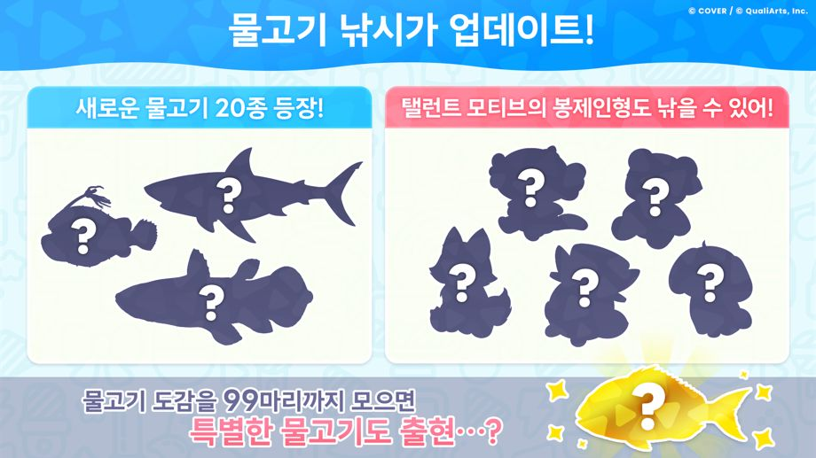
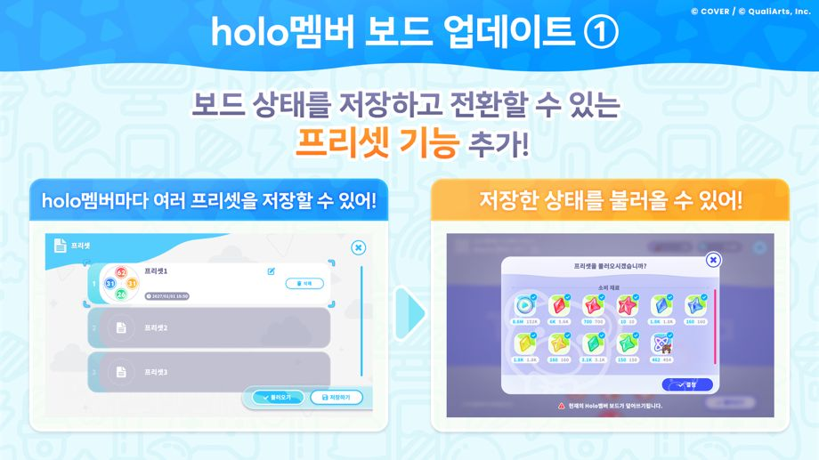
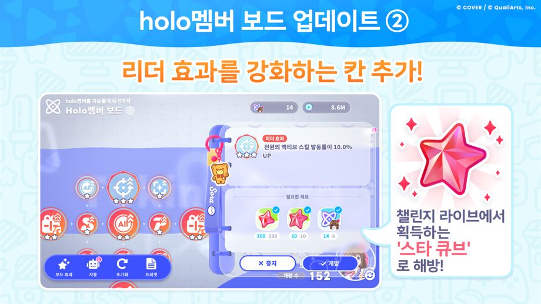

이용해 주셔서 감사합니다.
「hololive Dreams」 운영팀입니다.
2026-11-25 11:00:00에 Ver.1.3.0 업데이트를 실시하였습니다.
신규 미니 게임 「둥실둥실 파이트」 등장

2026-11-25 11:00:00부터 새로운 미니 게임 「둥실둥실 파이트」 등장!
「둥실둥실 파이트」는 물 위의 발판에서 상대를 물에 빠뜨리는 전략 게임입니다.
자기 팀 holo멤버와 동료로 만든 holo멤버들을 교묘히 움직여 게임을 유리하게 진행하자.
솔로 플레이에서 다양한 holo멤버와 대전하거나 멀티 플레이에서 다른 플레이어와 대전하자.
신규 컨텐츠 「챌린지 라이브」 등장

2026-11-25 11:00:00부터 새로운 콘텐츠 「챌린지 라이브」 등장!
「챌린지 라이브」는 스테이지별로 설정된 목표 스코어에 도전하는 신규 라이브 콘텐츠입니다.
스테이지 클리어 보상에는 Holo멤버 보드에 추가된 칸에서 사용하는 새로운 재료 「스타 큐브」도 등장합니다.
스테이지별로 설정된 보너스 멤버를 활용해 최상층 「스테이지 100」까지 갈 수 있습니다.
기타 업데이트
◆물고기 낚시 업데이트

- 20종류의 새로운 물고기가 등장하며 물고기 도감 달성 보상도 개방됩니다.
-
미끼로 「귤」, 「젤리」, 「별 모양 떡밥」을 베이의 잡동사니에서 획득할 수 있게 되었습니다.
「귤」, 「젤리」는 소다팝 라군의 메인 퀘스트 클리어, 「별 모양 떡밥」은 99종류의 물고기를 낚으면 각각 개방됩니다.
◆Holo멤버 보드 업데이트

-
「Holo멤버별 Holo멤버 보드 프리셋 기능」
Holo멤버 보드 상태를 Holo멤버별로 여러 개 저장하고, 저장한 상태를 불러올 수 있는 프리셋 기능을 추가했습니다.

-
「새로운 재료가 필요한 칸을 추가」
Holo멤버 보드에 리더 효과를 강화하는 칸을 추가했습니다.
추가된 칸을 개방하려면 챌린지 라이브에서 획득할 수 있는 「스타 큐브」가 필요합니다.
◆라이브 개선 및 업데이트
- 라이브 부스트가 축적된 상태에서도 부스트를 소비하지 않고 라이브를 할 수 있게 되었습니다.
- 라이브 부스트를 크게 회복할 때 확인 다이얼로그를 거치도록 변경했습니다.
- 라이브 부스트 회복 화면에서 「<<」 혹은 「>>」 눌렀을 때 회복 수가 0, 10, 20, 99로 단계적으로 멈추도록 개선했습니다.
- 선곡 화면과 스코어 레이트 화면의 이동을 개선했습니다.
◆기타 업데이트
-
「여러 멤버를 한꺼번에 개화하는 기능」
「전용 개화 Pt」로 개화 가능한 멤버를 한꺼번에 개화할 수 있게 되었습니다. -
「개화 멤버 선택 화면에 「블룸 스톤 사용」체크박스 추가」
체크 표시를 하면 「블룸 스톤」을 사용하여 개화할 수 있는 멤버도 표시됩니다. -
「개화 화면에 「블룸 스톤 사용」체크 박스 추가」
체크 표시를 하면 「블룸 스톤」을 사용하여 개화를 합니다.
※블룸 스톤을 보유하고 있지 않은 경우에는 체크 박스가 표시되지 않습니다.
※「전용 개화 Pt」부터 우선적으로 사용됩니다. -
「메가 스피어 코인을 Holo워크에서도 획득 가능」
메가 스피어 코인을 Holo워크의 「녹음」, 「잡담 방송」에서도 획득할 수 있게 되었습니다. -
「블룸 스톤 사용 시에 확인 다이얼로그를 표시」
블룸 스톤을 사용할 때 확인 다이얼로그가 표시됩니다. -
「멤버 상세 화면에서 멤버의 기초 파라미터만을 표시하는 기능」
Holo멤버 보드 등의 보너스 효과를 포함하지 않는 기초 파라미터만 표시할 수 있게 되었습니다. -
「Holo멤버 퀘스트에서 Holo멤버 근처로 이동할 수 있는 기능」
Holo멤버 퀘스트 화면의 Holo멤버 아이콘으로 대상 holo멤버 근처로 이동할 수 있게 되었습니다. -
「프로필 공개 범위를 항목별로 설정할 수 있는 기능」
항목별로 「공개」, 「비공개」, 「친구에게만 공개」로 설정할 수 있게 되었습니다.
◆기타 조정 및 오류 수정
-
holo홈에서 받을 수 있는 선물을 조정하였습니다.
모든 요일의 선물 내용을 「Holo메달」로 조정하였습니다. -
소다팝 라군의 「이치조 VIP 라운지」에서 특훈 아이템의 색상을 변환할 수 있게 되었습니다.
소다팝 코인을 소비해서, 피스나 크리스털을 다른 색상의 아이템으로 교환할 수 있습니다.
※메인 퀘스트 3장 「소다팝 라군」을 클리어하면 개방됩니다. - 하모니 가든의 비밀 트레저 출현 위치를 일부 조정하였습니다.
-
Holo멤버 보드의 아이콘을 일부 조정했습니다
대상: 「액티브 스킬 발동률 UP」「스코어 서포트 효과」 - 일부 holo멤버의 라이브 의상 표정과 색감 등을 조정했습니다.
- 파크에 떨어져 있는 물건을 더 쉽게 주울 수 있도록 조정하였습니다.
- 각종 미니 게임의 경미한 오류를 수정했습니다.
- 그 외 경미한 오류를 수정했습니다.